Assessment
검사 소개
한국 최고 전문가의 40년간 축적된 분석 데이터 기반, 세계 최초 게임형 두뇌 잠재력 평가 시스템.
K⁺PASS · 케이-패스
아동 학습·적성
지능검사
5세 ~ 13세
한국 최초 게임형 두뇌 잠재력 평가. P·A·S·S 4축 기반 인지처리 경로 직접 분석, 두뇌 발달 패턴 정량화.
영재·재능 분석ADHD 조기 선별학습법 추천
D⁺CAS · 다-카스
청소년·성인
진로·직무 검사
14세 ~ 성인
두뇌유형 분석 / 인지적 능력 / 직무적성 리스트. 기업 HR·군·경·보안 기관까지 활용 가능한 뇌 기반 진로·적성 검사.
직무 적합도 분석HR 대시보드진로 추천
PASS 4축 인지 평가
P
계획력
Planning
전두엽 기반 실행 기능. 자기통제·전략 수립·목표 달성 능력
A
주의력
Attention
선택적 주의·집중 유지. 학습 효율성·ADHD 관련 지표
S
동시처리
Simultaneous
우뇌 패턴·전체 맥락 파악. 창의적·시각적·직관적 사고
Ss
순차처리
Successive
좌뇌 언어·논리·단계 처리. 순서·규칙 기반 학습 강점
샘플 검사 체험
버튼을 눌러 샘플 문항을 직접 체험해보세요. 체험판에서는 애니메이션 스토리 없이 샘플 문항만 체험 가능합니다.
K⁺PASS
K-PASS 샘플 검사
아동 학습·적성 지능검사
5세 ~ 13세 대상
게임형 인지 과제로 두뇌 잠재력을 직접 체험해보세요.
D⁺CAS
D-CAS 샘플 검사
청소년·성인 진로·직무 검사
14세 ~ 성인 대상
뇌 기반 진로·직무 적성을 직접 체험해보세요.
방송 & 시연 영상
📺 방송 소개
K-PASS 언론 영상 — SBS Biz 〈트렌드스페셜〉
SBS Biz 트렌드스페셜에 소개된 K-PASS 두뇌 잠재력 평가 시스템 방송 편집본입니다.
YouTube에서 보기 →검사 프로세스
STEP 1
다운로드
PC / 태블릿
Windows · iOS
→
STEP 2
검사 진행
30~50분 소요
게임형 진행
→
STEP 3
결과 확인
검사 완료 즉시
자동 리포트
Track Record
검사 도입 & 활동 실적
K-PASS · D-CAS 기반 인지검사를 전국 대학, 청년기관, 초등학교, 해외 기관에 성공적으로 도입한 실제 현장 기록입니다.
🏫
국내 대학 파트너십
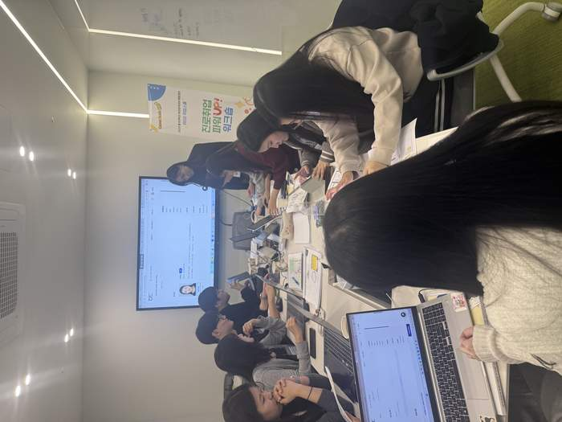
동의대학교 RISE 취업스쿨
진로취업 파워UP 워크숍 — D-CAS 기반 자기이해 및 진로설계
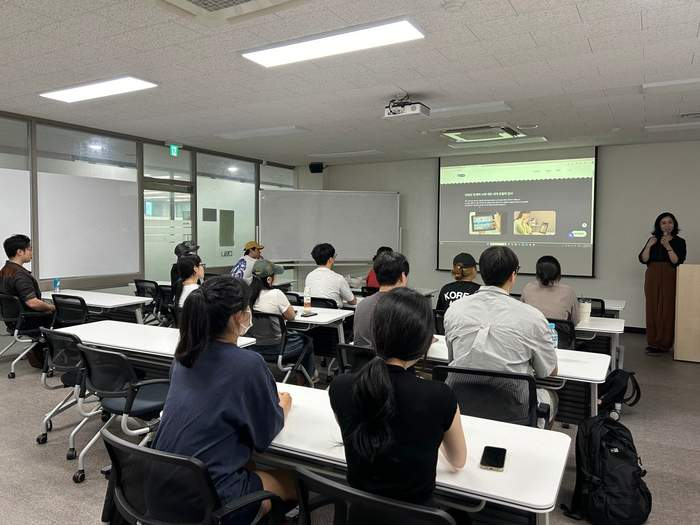
동서대학교 D-CAS 강의
뇌과학 기반 D-CAS 검사 소개 및 진로 매핑 강의
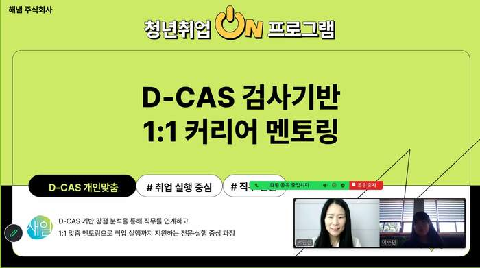
D-CAS 1:1 커리어 멘토링
청년취업ON 프로그램 — D-CAS 강점 분석 기반 취업 실행 지원
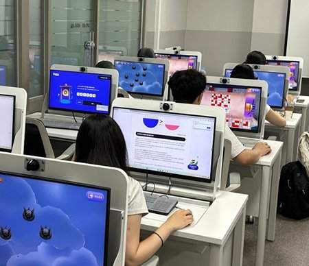
동의대학교 온라인 K-PASS 실습
학생들이 직접 K-PASS 인지검사를 체험하는 수업
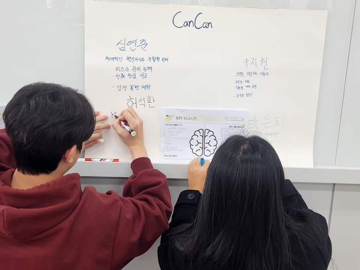
부산외대 글로벌마케터 5기
D-CAS 검사결과를 활용한 자기이해 강의
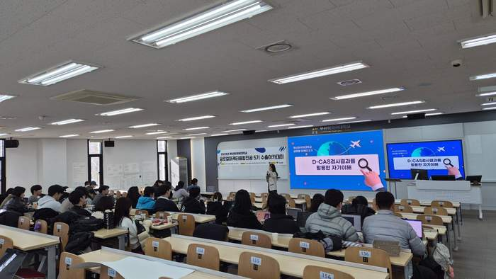
부산외대 대규모 특강
아이디어 박스 세션 — 뇌유형별 팀 프로젝트
💼
취업 · 청년 지원
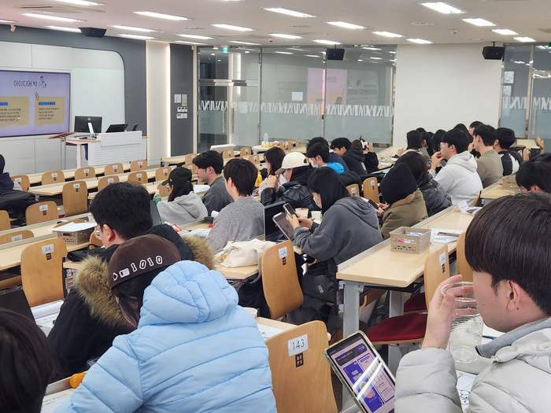
청년센터 CanCan 워크숍
뇌유형 MY 워크시트 활동 — 강점 분석 및 직무 연결
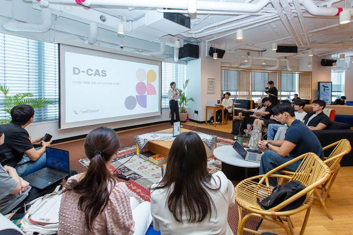
산자부 취업준비 청년 D-CAS 교육
D-CAS 검사 및 인지특성 기반 취업 역량 강화 교육
🧒
초등 K-PASS 검사
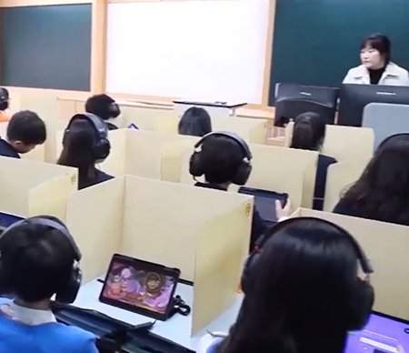
7개 교육기관 K-PASS 단체검사
초등학생 대상 게임형 인지능력검사 실시
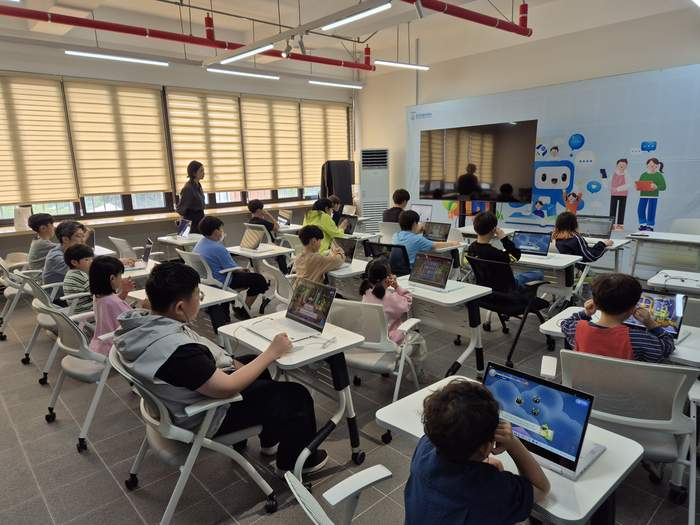
한국교원대 × 증평군 K-PASS 검사 ①
충청북도 증평군 학생 대상 K-PASS 시범 운영
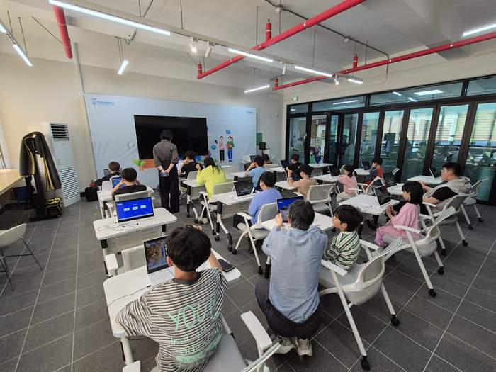
한국교원대 × 증평군 K-PASS 검사 ②
태블릿 기반 게임형 인지검사 — 학생·학부모 동반 참여
🌍
해외 진출
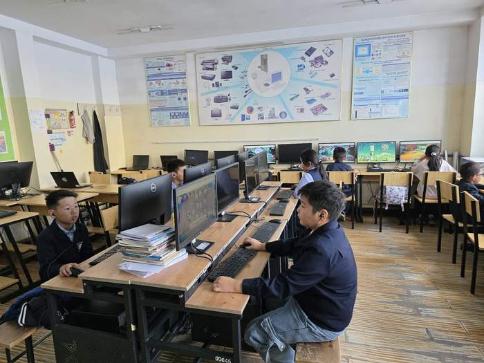
몽골 공립학교 K-PASS 시범검사
울란바토르 공립학교 첫 해외 현장 시범
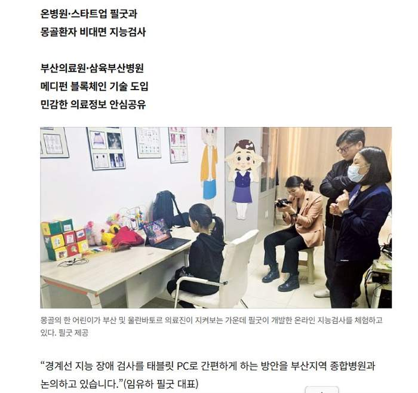
몽골 국립아동병원 온라인 검사
부산·울란바토르 의료진 입회 비대면 지능검사 — 언론 보도
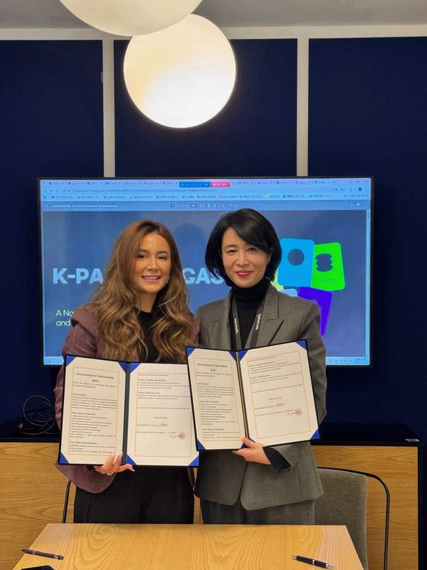
아제르바이잔 정신치료센터 MOU 체결
K-PASS & D-CAS 해외 수출 달성 — 공식 업무협약 서명
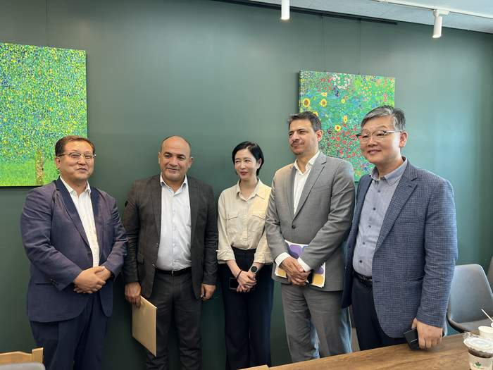
이라크 교육부 관계자 미팅
K-PASS / D-CAS 도입 협의 — 중동 시장 진출 논의
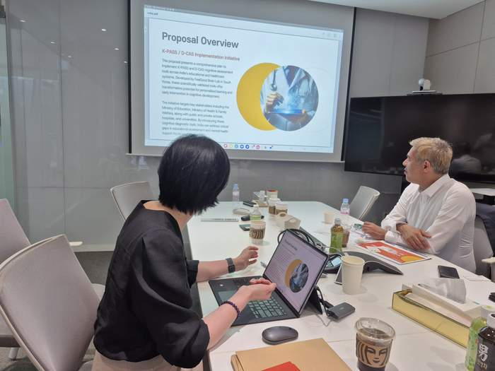
인도 릴라이언스그룹 미팅
K-PASS / D-CAS Implementation Initiative — 인도 전역 도입 제안